Chapter 2 showed how to choose a robot configuration that reaches a target while satisfying geometric constraints. Here the robot starts at a different configuration and must move to that goal. We assume that you can evaluate forward kinematics, form a constrained optimization problem and check a numerical solution. We will use those tools to construct candidate motions, develop a search through checked connections and prepare a reference for a controller. The same planar arm lets us compare the methods under one geometry and one clearance requirement.
Suppose the robot’s tip must reach a desired position at a chosen future time. Three responsibilities connect that request to robot commands.
| Stage | What it supplies |
|---|---|
| Waypoint | Inverse kinematics chooses an allowed goal configuration for the target. |
| Reference motion | Planning constructs and checks a route from the current configuration; timing specifies when each posture should be reached. |
| Controller | Feedback combines the reference with measurements of the robot to choose short-term commands. |
These stages operate over different horizons: a future goal, the motion leading to it and immediate corrections during execution. An allowed goal says nothing about the route to it. A geometrically clear route leaves its speed unspecified. A timed reference still requires a controller to track it on the physical robot. This chapter develops the middle stage and states what its checks establish. A controller’s ability to correct tracking error does not justify sending it a reference that crosses an obstacle.
Consider the two-link planar arm from Chapter 2. Its link lengths are 0.4 m and 0.3 m, and its base is fixed at the world origin. The shoulder angle is measured from the positive horizontal axis; the elbow angle is relative to the first link. The joint vector contains both angles. Calculations use radians; figures and the following endpoint values use degrees.
\mathbf q_{\mathrm{start}}= \begin{bmatrix}30^\circ\\45^\circ\end{bmatrix}, \qquad \mathbf y^*=\begin{bmatrix}0.5\\0.2\end{bmatrix}\ \mathrm m, \qquad \mathbf q_{\mathrm{goal}}\approx \begin{bmatrix}-11.517^\circ\\80.406^\circ\end{bmatrix}. \tag{1.1}
The goal is the inverse-kinematics solution with a positive elbow angle. Holding that configuration fixed gives every planning method the same endpoint problem. Choosing another configuration that reaches the same tip target would change the motion-planning problem.
The obstacle is a disc centered at world position (0.49, 0.35) m with radius 0.05 m. Model each link in Figure 1.1 as a complete line segment. Require at least 5 mm clearance from the disc surface. The model omits link thickness and self-collision. Both joint coordinates range from −180° to 180°, with no wrapping across the boundary. The earlier 60° elbow limit is absent; it would exclude the chosen goal.
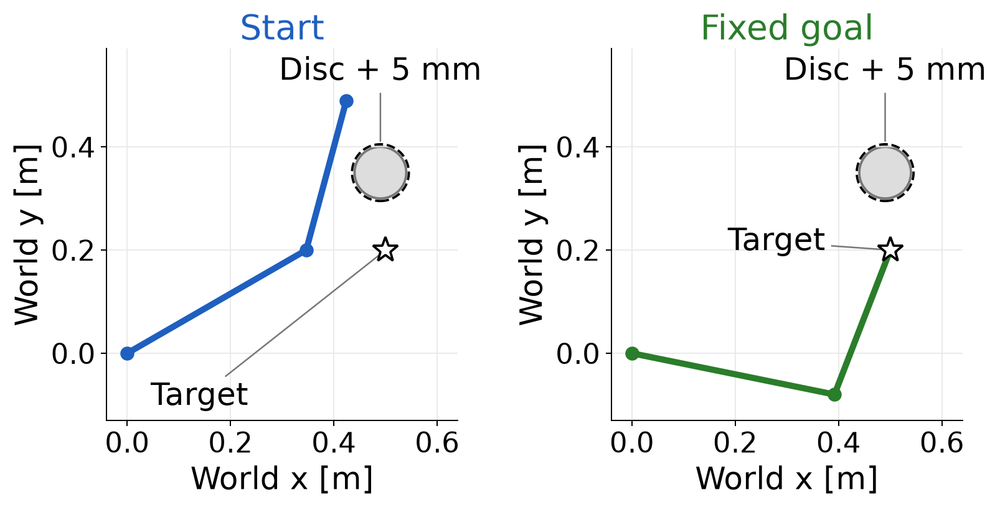
To compute clearance for one link, let its world-frame endpoints be the two-dimensional position vectors \mathbf p_0 and \mathbf p_1. Let \mathbf c denote the disc center and r_o its radius. Project the center onto the line through the link, then restrict the projection to the segment.
Dividing the along-link dot product by the squared link length gives a dimensionless fraction. Clipping it to the interval from zero to one keeps the closest point on the segment:
\begin{aligned} u&=\min\!\left(1,\max\!\left(0, \frac{(\mathbf c-\mathbf p_0)^\top(\mathbf p_1-\mathbf p_0)} {\|\mathbf p_1-\mathbf p_0\|^2}\right)\right),\\ \mathbf p_{\mathrm{closest}}&=\mathbf p_0+u(\mathbf p_1-\mathbf p_0),\\ d_{\mathrm{link}}&=\|\mathbf p_{\mathrm{closest}}-\mathbf c\|-r_o. \end{aligned} \tag{1.2}
The link has nonzero length, so the denominator is positive. Fractions zero and one select its endpoints; an intermediate fraction selects an interior point. Subtracting the disc radius converts center distance into signed clearance from its surface, in meters. A negative clearance means the link penetrates the disc. Evaluate (1.2) on both links and take the smaller value, written d_{\mathrm{clear}}(\mathbf q). The posture passes when this value is at least the required clearance, written d_{\mathrm{req}}, which is 0.005 m here.
At the start posture, we can see why the closest point may be an endpoint or lie inside a link. For link 2, forward kinematics gives the elbow and tip positions
\mathbf p_0\approx\begin{bmatrix}0.3464\\0.2000\end{bmatrix}\ \mathrm m, \qquad \mathbf p_1\approx\begin{bmatrix}0.4241\\0.4898\end{bmatrix}\ \mathrm m.
The projection’s numerator is approximately 0.05462 square meters and its denominator is 0.09 square meters. Their ratio lies between zero and one, so clipping leaves it unchanged. Substitution into (1.2) gives
\begin{aligned} u&\approx\frac{0.05462}{0.09}\approx0.607,\\ \mathbf p_{\mathrm{closest}} &\approx\begin{bmatrix}0.3935\\0.3758\end{bmatrix}\ \mathrm m,\\ d_{\mathrm{link}}&\approx(0.09987-0.05000)\ \mathrm m \approx49.9\ \mathrm{mm}. \end{aligned}
For link 1, the same projection gives an unclipped fraction of 1.498. Clipping selects fraction one, so its closest point is the elbow. Its disc-surface clearance is 157.6 mm. The smaller link clearance is therefore 49.9 mm, and the start posture passes the 5 mm requirement.
Now move both joint angles linearly from start to goal. At the halfway posture they are approximately 9.241° and 62.703°. The second link penetrates the disc by 47.7 mm, as Figure 1.2 shows. Clear endpoints therefore leave an invalid direct connection.
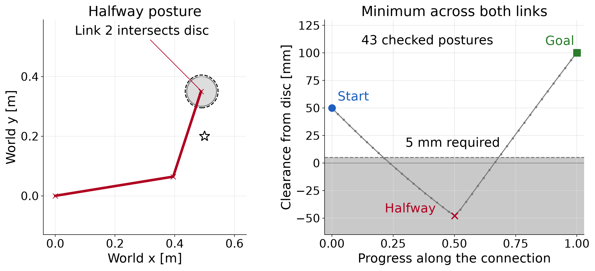
Starting an inverse-kinematics solve at the current posture produces a sequence of guesses that can look like a motion toward the goal. Its accepted guesses do not supply a checked motion. The acceptance test measures numerical progress in the stated optimization problem. Executing a connection between successive guesses would require checking the geometry along that connection.
The pair of joint angles determines both links through forward kinematics. Plotting shoulder angle against elbow angle therefore represents an entire arm posture as one point. The set of configuration choices is called configuration space. For this bounded joint chart, expressed in radians,
\mathcal Q=[-\pi,\pi]^2, \qquad \mathcal Q_{\mathrm{free}}= \{\mathbf q\in\mathcal Q: d_{\mathrm{clear}}(\mathbf q)\ge d_{\mathrm{req}}\}. \tag{1.3}
The subset \mathcal Q_{\mathrm{free}} contains the configurations that satisfy the clearance requirement. It excludes even nonpenetrating postures when their clearance is smaller than 5 mm. The subscript “free” always refers to the specified geometry, joint bounds and margin.
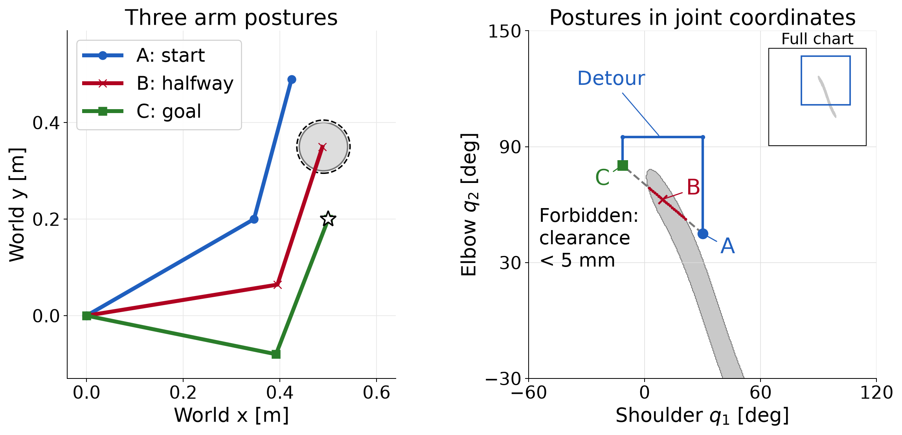
A circular obstacle in the workspace produces a different shape in configuration space because both links move with the angles. A straight segment in this plot changes both angles linearly; the tip generally follows a curved workspace path. For a seven-joint arm the same idea uses seven coordinates. We cannot draw all seven coordinates on two axes.
The shaded boundary in Figure 1.3 comes from evaluating a grid of configurations. It is an illustration. At any proposed posture, the actual checker evaluates the segment geometry in (1.2). It does not read validity from the picture.
The blue detour raises the elbow to 95°, changes the shoulder to its goal angle and then lowers the elbow to its goal angle. Its four waypoints are
\begin{gathered} (30^\circ,45^\circ)^\top,\quad (30^\circ,95^\circ)^\top,\\ (-11.517^\circ,95^\circ)^\top,\quad (-11.517^\circ,80.406^\circ)^\top. \end{gathered} \tag{1.4}
These waypoints describe a candidate detour. To check it, we first need to specify the connections between adjacent waypoints.
A route assigns a posture to each value of a progress parameter. We call this a path. Let the scalar s run from zero to one without time units. A valid geometric path is a continuous function satisfying
\begin{gathered} \mathbf q_{\mathrm{path}}(s)\in\mathcal Q_{\mathrm{free}}, \qquad 0\le s\le1,\\ \mathbf q_{\mathrm{path}}(0)=\mathbf q_{\mathrm{start}}, \qquad \mathbf q_{\mathrm{path}}(1)=\mathbf q_{\mathrm{goal}}. \end{gathered} \tag{1.5}
A waypoint list specifies such a function only after we choose how to connect adjacent entries. The blue detour uses straight joint-space segments. On an edge with endpoint configurations \mathbf q_a and \mathbf q_b, local progress gives
\mathbf q_{\mathrm{edge}}(s) =(1-s)\mathbf q_a+s\mathbf q_b, \qquad 0\le s\le1. \tag{1.6}
Each segment includes both endpoints, so joining successive segments produces a continuous path. These connections respect the joint box because every interpolated coordinate lies between its endpoint values. They may still violate clearance, as the direct connection did.
To describe the whole detour with one progress variable, we must assign a progress interval to each segment. One simple choice gives each of its three segments one third of the interval. For global progress s, the corresponding local progress is
\text{local progress}=\begin{cases} 3s,&0\le s<1/3,\\ 3s-1,&1/3\le s<2/3,\\ 3s-2,&2/3\le s\le1. \end{cases}
Substitute this local value for s in (1.6), using the current segment’s endpoint configurations. At each shared boundary, both segments give the same waypoint. Equal progress intervals need not represent equal joint-angle distances. This choice fixes the path parameterization; a time schedule then determines how quickly the robot progresses along it.
Specifying when each posture is reached turns the path into a trajectory. Let t denote time in seconds and t_{\mathrm f} the duration. A continuous, nondecreasing progress schedule produces
\mathbf q(t)=\mathbf q_{\mathrm{path}}(s(t)), \qquad s(0)=0,\qquad s(t_{\mathrm f})=1. \tag{1.7}
Where the derivatives exist, the chain rule gives the joint angular velocity:
\dot{\mathbf q}(t)= \frac{d\mathbf q_{\mathrm{path}}}{ds}\,\dot s(t). \tag{1.8}
The path derivative measures angle change per unit progress, and the schedule derivative measures progress per second. Their product has units of rad/s. For uniform progress,
s(t)=\frac{t}{t_{\mathrm f}},\qquad \dot s(t)=\frac1{t_{\mathrm f}}.
Halving the duration doubles the progress rate. Equation (1.8) then doubles the joint angular velocity at each corresponding point along the path. At a corner in a piecewise linear path, the path direction changes abruptly. Motion with bounded acceleration may require slowing to a stop there or smoothing the corner. Thus a path’s geometric validity alone does not make its timing physically suitable.
A single posture is tested by a configuration check. Testing the connection between two postures is an edge check. For this course’s checker, choose enough subintervals along the straight joint-space edge in (1.6) that neither joint changes by more than one degree between checks. This rule sets the checking resolution. It does not limit the distance between a planner’s nodes. The RAI bidirectional planner introduced later uses different internal checks. We apply this course checker to its returned path separately. For example, if the largest coordinate change is 41.517°, then 41 subintervals are too few and 42 suffice.
In radians, the general rule is
\begin{gathered} N_{\mathrm{edge}}= \max\!\left(1,\left\lceil \frac{\|\mathbf q_b-\mathbf q_a\|_\infty}{\pi/180} \right\rceil\right),\\ s_j=\frac{j}{N_{\mathrm{edge}}}, \quad j=0,\ldots,N_{\mathrm{edge}}. \end{gathered} \tag{1.9}
The infinity norm selects the largest absolute joint-coordinate change. The ceiling rounds the ratio up to an integer. Taking the maximum with one also defines the check for identical endpoints. There is one more sampled posture than subintervals because both endpoints are included. Each s_j measures progress along the current edge, starting from zero again on the next edge.
The direct start-to-goal edge has coordinate changes of approximately −41.517° and 35.406°. Its 42 subintervals give 43 scheduled postures, indexed from zero at the start to 42 at the goal. At each sampled posture, reuse the same check of joint bounds and whole-link clearance. Reject the edge as soon as one check fails.
| Check index | Smallest clearance from the disc | What it establishes |
|---|---|---|
| 0 | 49.9 mm | The start passes. |
| 9 | 4.3 mm | The first failure rejects the edge. |
| 21 | −47.7 mm | A later diagnostic scan finds penetration. |
| 42 | 100.3 mm | The goal passes. |
The edge is rejected at check 9 because 4.3 mm is below the required 5 mm margin. The robot has not yet touched the physical disc. That single failure settles the decision. A full scan to obtain Figure 1.2 evaluates additional postures to explain the geometry. Those later evaluations are unnecessary for rejecting the edge. A planner can also reuse an already validated start posture; this example then evaluates checks 1 through 9 before stopping.
Now apply the same rule separately to the detour’s three segments in (1.4). Every scheduled posture passes. The smallest checked clearance is 49.9 mm, at the start; all later checked postures have greater clearance. Thus the detour passes the sampled test that rejected the direct connection.
Passing every scheduled check establishes clearance at those postures. A violation could still occur between them. One degree controls the sampling spacing; 5 mm controls the clearance test. A continuous-clearance guarantee needs an additional bound on what can happen between checks or a method that checks the swept geometry. Section 4 states a sufficient clearance condition. Appendix C.2 derives the displacement bound used by that condition.
We now have a common problem for two approaches: fixed endpoints, a robot model, allowed configurations and a connection rule. Trajectory optimization will choose a collection of configurations together. Sampling-based planning will search through candidate configurations and checked connections. Both approaches must be judged against the same motion-validity requirement.
The direct connection crosses the obstacle. We can let an optimizer bend it by choosing intermediate configurations together. To do so, we must specify the variables, a cost that ranks their motion and constraints that express the requirements. The resulting numerical solution still needs a check of the connections between its configurations.
Place 21 configurations along the motion, including the known start. These sampled configurations are called knots; RAI calls the 20 optimized configurations time slices. Each knot contains the shoulder and elbow angles. The start is fixed data, and we collect all remaining angles into one decision vector:
\mathbf q_0=\mathbf q_{\mathrm{start}},\qquad \mathbf z= \begin{bmatrix}\mathbf q_1\\ \vdots\\ \mathbf q_T\end{bmatrix} \in\mathbb R^{nT},\qquad n=2,\quad T=20. \tag{2.1}
There are forty decision coordinates. The goal configuration is known, but its knot remains in this vector and will be fixed by an equality constraint. An optimizer update can change every free knot at once. The optimizer’s iteration count is separate from the index of a configuration along the motion.
In this section, t is an integer knot index, from zero to T. In the preceding section it denoted continuous physical time in seconds. We place the knots uniformly in a normalized interval of length one:
\begin{aligned} \Delta t&=\frac1T=0.05,\\ \text{normalized time at knot }t&=\frac{t}{T},\\ \text{physical time at knot }t&=t_{\mathrm f}\frac{t}{T}. \end{aligned} \tag{2.2}
The last expression assumes a later uniform scaling to a duration t_{\mathrm f} seconds. The optimization below does not choose that duration. Its differences are measured per normalized time unit. Choosing a physical duration and checking what the robot can execute remain necessary.
For a revolute joint, an angle difference divided by an interval gives an average angular velocity over that interval. Apply the operation to both coordinates:
\mathbf v_t=\frac{\mathbf q_t-\mathbf q_{t-1}}{\Delta t}. \tag{2.3}
The change between consecutive angular velocities gives an angular acceleration estimate. Substituting the two first differences explains the coefficient on the middle configuration:
\begin{aligned} \mathbf a_t &=\frac{\mathbf v_t-\mathbf v_{t-1}}{\Delta t}\\ &=\frac{(\mathbf q_t-\mathbf q_{t-1}) -(\mathbf q_{t-1}-\mathbf q_{t-2})}{\Delta t^2}\\ &=\frac{\mathbf q_{t-2}-2\mathbf q_{t-1}+\mathbf q_t}{\Delta t^2}. \end{aligned} \tag{2.4}
Both vectors have two components. These are joint angular quantities; a tip velocity would require a kinematic map. With the normalized interval, their units are radians per normalized time unit and radians per normalized time unit squared. Uniform scaling to a physical duration divides them by t_{\mathrm f} and t_{\mathrm f}^2, respectively.
For one joint, consider three angles at intervals of 0.05. Equal angle increments give equal velocities and zero second difference:
\begin{aligned} (q_{t-2},q_{t-1},q_t)&=(0,0.05,0.10)\ \mathrm{rad},\\ v_{t-1}&=\frac{0.05-0}{0.05}=1,\qquad v_t=\frac{0.10-0.05}{0.05}=1,\\ a_t&=\frac{1-1}{0.05}=0. \end{aligned}
Replacing the last angle by 0.15 rad changes the second velocity to 2 and the acceleration estimate to 20, in the same normalized-time units. The first-difference feature measures movement; the second-difference feature measures how that movement changes.
At the first free knot, (2.4) needs a configuration before the start. For an initially resting robot, repeat the known start as a fixed prefix:
\mathbf q_{-1}:=\mathbf q_0,\qquad \mathbf v_0=\mathbf 0,\qquad \mathbf a_1=\frac{\mathbf q_1-\mathbf q_0}{\Delta t^2}. \tag{2.5}
The prefix supplies zero incoming velocity. It does not impose zero outgoing movement. A cost on the first acceleration penalizes moving away from the start, while still allowing the optimizer to choose that movement. If the robot is already moving, the prefix must represent its incoming motion. Repeating the start would then specify the wrong initial condition.
We can discourage large angular accelerations by approximating the integral of squared acceleration. Each interval contributes its width times the squared feature:
\begin{aligned} f_a(\mathbf z) &=\sum_{t=1}^{T}\Delta t\,\|\mathbf a_t\|^2 \approx\int_0^1\|\mathbf a(\xi)\|^2\,d\xi,\\ \mathbf r_t&=\sqrt{\Delta t}\,\mathbf a_t,\qquad f_a(\mathbf z)=\sum_{t=1}^{T}\|\mathbf r_t\|^2. \end{aligned} \tag{2.6}
Here \xi denotes continuous normalized time. We define the discrete cost by the final sum. The integral motivates its interval weighting; it does not assign a continuous acceleration to an unspecified interpolating curve. Putting the square root of the interval inside each residual recovers the interval width after squaring.
RAI’s control objective uses this plain sum of squares. Unlike the half-squared-residual convention used for many derivations in Chapter 2, there is no factor of one half. Stack the two-component residuals into \mathbf r\in\mathbb R^{40} and write their Jacobian as \mathbf J_r. Then
\begin{gathered} f_a=\mathbf r^\top\mathbf r,\qquad \nabla f_a=2\mathbf J_r^\top\mathbf r,\\ \mathbf r_t= \frac{\sqrt{\Delta t}}{\Delta t^2} (\mathbf q_{t-2}-2\mathbf q_{t-1}+\mathbf q_t). \end{gathered} \tag{2.7}
At the chosen interval, the coefficient on a raw second difference is approximately 89.443. Its square is 8000. Thus omitting the interval factors would change the numerical objective substantially. Multiplying the only objective by a positive constant preserves its exact constrained minimizers, but changes its gradient, multiplier scale and balance against any other soft cost. Numerical solver settings must respect the chosen scaling.
Replacing acceleration by velocity gives a different objective:
f_v(\mathbf z)=\sum_{t=1}^{T}\Delta t\,\|\mathbf v_t\|^2, \qquad \mathbf r_t=\sqrt{\Delta t}\,\mathbf v_t. \tag{2.8}
To isolate this choice, temporarily remove the obstacle. Keep the same start and positive-elbow goal, and require the final two knots to coincide. That last condition sets the final difference velocity to zero. Both costs are quadratic in the free angles and both endpoint conditions are linear, so these two comparisons can be solved directly as equality-constrained quadratic problems.
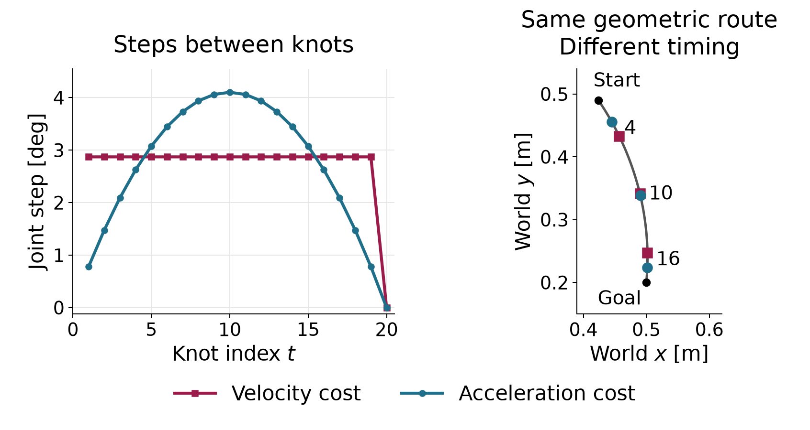
Figure 2.1 shows what the choice of objective changes. Both objectives move the arm along the same geometric route, but they progress along it at different speeds. The left panel shows this speed profile as the size of each joint step. The right panel shows where the tip is at a few matching knots.
In the left panel, the velocity cost gives nineteen equal joint steps, each with Euclidean size 2.872°. The twentieth step is zero because of terminal rest. To see why equal steps are favored, keep their sum fixed at the required start-to-goal displacement. Making one step larger and another smaller increases the sum of squared step sizes. The optimum distributes movement equally among the nineteen available steps.
Acceleration cost instead penalizes changes between steps, including the change from the zero incoming step. The step sizes rise from 0.779° to 4.103° at knot 10, then decrease to zero. This motion starts slowly, moves fastest in the middle and slows down before the goal.
Both solutions lie on the same straight segment in joint space, so the right panel shows one tip route for both. Matching knot indices identify the same normalized time through (2.2). Knot 4, for example, is normalized time 0.2, and knot 16 is 0.8. At knot 4, the velocity-cost motion has covered about 21% of the joint-space displacement and the acceleration-cost motion about 13%. At knot 16 the order reverses, with about 84% against 92%. The largest tip separation at a matching knot is about 2.6 cm.
The two minimized costs are 0.9547 for velocity and 10.9104 for acceleration. These values measure different quantities; their magnitudes do not rank the two solutions against each other. Neither solution solves the original avoidance problem. Their common route is the direct connection that crossed the disc. Restoring the obstacle requires explicit clearance constraints.
We now restore the disc and select acceleration cost. The motion must meet three physical requirements. The arm must reach the fixed goal posture at the last knot, and it must come to rest there. At every free knot, every point of both links must stay at least 5 mm from the disc. The first two requirements are equalities. Two rows fix the goal angles, and two more make the final discrete angular velocity zero:
\mathbf h(\mathbf z)= \begin{bmatrix} \mathbf q_T-\mathbf q_{\mathrm{goal}}\\[2pt] (\mathbf q_T-\mathbf q_{T-1})/\Delta t \end{bmatrix}=\mathbf 0\in\mathbb R^4. \tag{2.9}
The first pair is measured in radians; the second in radians per normalized time unit. Terminal rest makes the last two configurations coincide. It does not force the preceding steps to vanish, or impose zero terminal acceleration. These are discrete boundary conditions. Physical smoothness also depends on how the robot will interpolate and time the returned configurations.
For the clearance requirement, apply the segment geometry from (1.2) separately to each link at every free knot. Let \mathbf p_{t,\ell} be the closest point on link \ell to the disc center at configuration \mathbf q_t. Write the margin requirement with the same nonpositive sign convention as Chapter 2:
\begin{gathered} g_{t,\ell}(\mathbf z) =r_o+d_{\mathrm{req}}-\|\mathbf p_{t,\ell}-\mathbf c\|\le0,\\ t=1,\ldots,T,\qquad \ell\in\{1,2\}. \end{gathered} \tag{2.10}
Each row is measured in meters. A positive value is the clearance deficit; a negative value is the clearance beyond the required margin. For example, a center-to-link distance of 0.053 m gives a positive row of 0.002 m: the link is outside the physical disc but misses the margin by 2 mm. A distance of 0.060 m gives a row of −0.005 m and passes with 5 mm to spare.
There are forty inequality rows: twenty free knots times two links. The fixed start was checked in Section 1 and needs no decision-dependent row. The complete program is
\begin{aligned} \min_{\mathbf z\in\mathbb R^{40}}\quad& \sum_{t=1}^{20}\left\| \frac{\sqrt{\Delta t}}{\Delta t^2} (\mathbf q_{t-2}-2\mathbf q_{t-1}+\mathbf q_t)\right\|^2\\ \text{subject to}\quad&\mathbf h(\mathbf z)=\mathbf0,\\ &g_{t,\ell}(\mathbf z)\le0, \quad t=1,\ldots,20,\quad\ell=1,2,\\ &\mathbf q_{-1}=\mathbf q_0=\mathbf q_{\mathrm{start}} \quad\text{(fixed data)}. \end{aligned} \tag{2.11}
This program has forty decision coordinates, four equality rows and forty inequality rows. It omits joint-bound rows. We check the returned angles against the joint box afterward; success on (2.11) alone does not establish that requirement. It also checks clearance only at the knots. No row yet constrains the interior of a connection between adjacent knots.
An exact constraint and a numerical acceptance tolerance serve different roles. The mathematical requirement remains 5 mm clearance. A solver may return a small positive inequality residual within its stopping tolerance. Report its size and units before deciding whether it is acceptable for a particular application. Rounding a displayed clearance to 5.0 mm can conceal both tiny numerical errors and more substantial errors in other checks.
All forty variables are solved together. Each motion feature uses only a few neighboring knots. For an acceleration residual away from the fixed prefix, its nonzero Jacobian blocks are
\begin{aligned} \frac{\partial\mathbf r_t}{\partial\mathbf q_{t-2}} &=\frac{\sqrt{\Delta t}}{\Delta t^2}\mathbf I_2,\\ \frac{\partial\mathbf r_t}{\partial\mathbf q_{t-1}} &=-2\frac{\sqrt{\Delta t}}{\Delta t^2}\mathbf I_2,\\ \frac{\partial\mathbf r_t}{\partial\mathbf q_t} &=\frac{\sqrt{\Delta t}}{\Delta t^2}\mathbf I_2. \end{aligned} \tag{2.12}
Every other knot block in that row is zero. Blocks for fixed configurations are omitted from the decision Jacobian. A clearance row depends only on its own configuration, while the terminal-rest row couples the last two. Figure 2.2 marks the knot blocks that each feature can depend on. Its acceleration rows shift by one column block from one knot to the next.
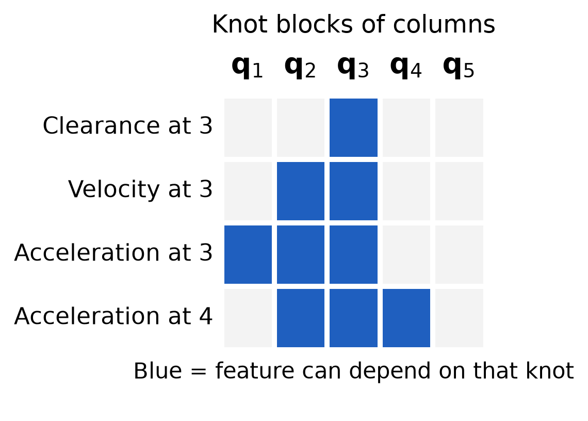
For the clearance derivative, first hold the projection fraction u fixed. Let \mathbf J_0 and \mathbf J_1 be the two link-endpoint position Jacobians, each with two rows and two columns. The closest-point position Jacobian with this fraction fixed is
\overline{\mathbf J}_p=(1-u)\mathbf J_0+u\mathbf J_1. \tag{2.13}
Define the unit direction from the disc center toward that point. Applying the derivative of a norm gives the row
\begin{gathered} \mathbf n=\frac{\mathbf p-\mathbf c}{\|\mathbf p-\mathbf c\|},\\ \frac{\partial g_{t,\ell}}{\partial\mathbf q_t} =-\mathbf n^\top\overline{\mathbf J}_p \in\mathbb R^{1\times2}. \end{gathered} \tag{2.14}
The fraction u can change with the configuration, but its change contributes no first-order change to the distance. At an interior projection, the vector from the center to the closest point is perpendicular to the link. A change in u slides that point along the link, so it contributes zero to the distance derivative. While a clipped endpoint remains selected, u is constant at zero or one. At a transition between an interior projection and an endpoint, the first derivatives agree when the center distance is positive; second derivatives can change there. Appendix B gives the omitted term explicitly.
The normalized direction in (2.14) is undefined when the center lies on the segment. Also distinguish a row for one link from the minimum clearance across both links. That minimum can be nonsmooth when two links tie with different gradients. Our program retains one inequality per link, so it does not differentiate through a minimum across links.
These features involve the current knot and at most two preceding knots. This temporal structure is called k-order Markov optimization, or KOMO, with order two here. The name describes how the features depend on the configurations; it does not select a particular optimization algorithm. The Jacobian is sparse, and products of its local blocks couple only nearby knots. This structure permits sparse linear algebra as the motion gets longer. It does not make every update local: solving the coupled linear system can change the entire sequence.
We can now use Chapter 2’s augmented-Lagrangian construction. During an inner solve, keep the multipliers and penalty weight fixed. RAI uses damped Newton steps with a Gauss–Newton curvature model for these residual features and a line search. After the inner solve, it updates the multipliers and increases the penalty weight, up to a cap. Its stopping rules are separate from the feasibility, stationarity and complementarity checks introduced in Chapter 2. We evaluate those residuals on the returned sequence. The clearance geometry makes the full problem nonlinear, so this is a local solve. A stopping test is not evidence of global optimality.
The same formulation can be expressed in RAI by adding an order-two control objective, the two endpoint objectives and a distance inequality for each link. The matched implementation and numerical checks are in Appendix B. The derivation above specifies the problem independently of a particular software interface.
We now solve (2.11) and examine what the returned sequence establishes and what it leaves unchecked.
The robot’s start and goal postures stay fixed. The optimizer also needs an initial guess for the entire sequence of free configurations, and that guess can change. We supply two. The first places equally spaced configurations on the direct start-to-goal line, and some of them put link 2 inside the disc. The second redistributes configurations along a supplied detour. All knots of the second satisfy the clearance rows initially. Their connections still need checking. We will develop the sampling construction of that detour later.
Figure 2.3 shows the default solver results in joint-angle space. The horizontal axis is the shoulder angle and the vertical axis is the elbow angle, so each point is one posture of the whole arm. The fixed start lies at the lower right and the fixed goal at the upper left. The red dashed line is the direct guess, and the purple dotted line is the detour. The blue dots are the knots returned with default solver options. Knots 12 and 13 are enlarged; the red square marks the clearance violation at knot 13.
The shaded regions show the clearance requirement in these coordinates. For each pair of joint angles, take the smallest distance from either link to the disc surface. The solid gray curve joins the postures where this distance is zero, so a link just touches the disc. Inside that curve, a link intersects the disc. The dashed curve joins the postures with exactly 5 mm of clearance. In the pale band between the two curves, the arm misses the disc but leaves less than the required 5 mm. These curves are contours of a clearance function of the two joint angles. They are not a drawing of the circular disc, which exists in the workspace. The contours approximate the boundaries from a grid of clearance values. The constraint rows evaluate the clearance at each knot directly. Figure 1.3 shaded the same 5 mm region without separating the contact boundary.
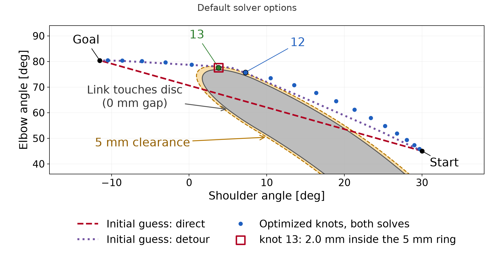
Both initial guesses give the same default result to numerical
accuracy, with acceleration cost 16.19. At knot 13, link 2 misses the
required clearance by 2.00 mm. RAI reports feasible as
true, but its residual threshold allows this violation. Its small-step
stopping rule does not establish that every constraint has been met.
Starting from a detour with clear knots does not prevent this
result.
To examine the motion between accurate knots, solve the same program with scaled constraint rows and tighter stopping options. This reference run reaches cost 16.14 from either initial guess. Link 2 at knots 12 and 13 has the only active clearance rows. Both knots meet the 5 mm requirement to numerical accuracy, with a tiny nonzero deficit. The other clearance rows have slack. The endpoint and final-velocity residuals are also tiny, and the returned angles lie inside the joint box. Appendix B.3 gives the settings, initialization details and exact residuals.
These results concern this problem and these initial guesses. They do not imply that initialization never matters in trajectory optimization.
The reference knots meet every requirement written in (2.11) to numerical tolerance. The robot also passes through the postures between them. Connect adjacent returned configurations by the straight joint-space edges used in Section 1. The endpoints of each edge lie within the joint box, so the interpolated coordinates remain within it. Clearance requires its own test.
Figure 2.4 shows the accurate reference in the physical workspace, with positions in meters. It enlarges the part of link 2 that passes the disc. The gray circle is the physical disc, and the dashed circle is the ring 5 mm outside it. The blue and green links show link 2 at knots 12 and 13. Each reaches the dashed ring, as its active clearance row requires. The red link is the posture halfway between them, found by interpolating the joint angles linearly. Its nearest point to the disc, marked by the cross, lies 1.84 mm inside the ring. The link stays outside the physical disc, so this posture does not collide. It still violates the 5 mm clearance that the task requires.
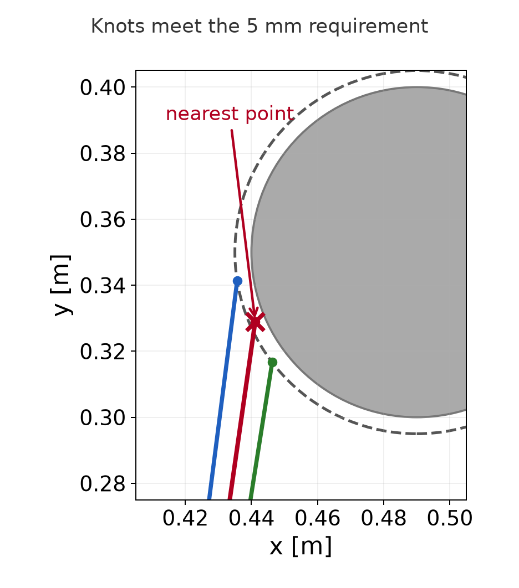
Apply Section 1’s one-degree sampling rule to interval 12→13. It gives four subintervals and five scheduled postures, including the endpoints. A diagnostic scan evaluates all five to show the clearance along the connection. Every interior sample misses the 5 mm requirement:
| Local edge progress | Clearance from the disc | Deficit from the 5 mm requirement |
|---|---|---|
| 0.25 | 3.620 mm | 1.380 mm |
| 0.50 | 3.156 mm | 1.844 mm |
| 0.75 | 3.626 mm | 1.374 mm |
The strict checker first rejects knot 12 because of its tiny nonzero deficit. The table comes from a separate diagnostic scan after that rejection. The numerical knot error and the millimeter-scale gap between knots are different reasons for rejection. Tolerating the former leaves the connecting motion invalid.
The checks between knots 12 and 13 found this violation without changing the motion. They evaluated more postures along the same straight joint-space segment. Adding checks can reveal a violation in this way, but it cannot repair one. A repair requires a different motion, for example from more knots or additional constraints in the program. That revised motion has new connections, and each of them needs fresh checks.
The optimized sequence therefore solves the sampled program to the stated tolerances but does not provide a motion that meets the original clearance requirement.
The accurate reference has two active clearance rows, on link 2 at knots 12 and 13, shown in Figure 2.4. Each has a positive multiplier. The reference solve multiplies every constraint row by ten. A positive scale preserves the exact feasible set, but changes the numerical problem. To interpret its multipliers in physical units, multiply the returned duals for the scaled rows by ten:
\lambda=10\lambda'.
The active multipliers, about 146.96 and 87.14, estimate the increase in locally optimized cost per meter of added clearance. Raising the common margin tightens both active rows, so their contributions add. For a small change along the same smooth local solution with the same active rows, raising the margin from 5.0 to 5.1 mm predicts
\text{cost increase}\approx(146.96+87.14)\times0.0001=0.02341.
Re-solving gives an increase of 0.02347, close to this local estimate. The multipliers do not predict the cost of a large change or a switch to another local solution.
A solver flag does not state how accurately each physical requirement
was met. Both runs report feasible as true, but their
clearance residuals differ:
| Run | Largest clearance deficit at a knot |
|---|---|
| Default options | 2.00 mm |
| Accurate reference | About 10^{-7} mm (nonzero) |
The reference combines constraint scaling with tighter stopping options. Scaling alone did not reliably give this accuracy in the recorded runs. Appendix B.3 gives those comparisons. They do not establish preferred settings for other problems.
Check each residual in its own units. Report clearance deficits in millimeters, goal residuals in radians and final-velocity residuals in radians per normalized time unit. Then check the connecting motion. A failed sample proves a violation. A finite check that passes does not certify clearance along the whole motion. Repeat both checks after changing the path or solving with different settings.
Execution also requires suitable timing, motion limits and a physical robot model. The acceleration cost alone does not establish those requirements.
The optimizer needs an initial guess for the whole motion. We can instead search for a route by proposing postures and testing connections between them. The start, goal, joint limits and 5 mm whole-link clearance requirement stay the same. We do not need to construct the full forbidden region shown in the figures. We evaluate geometry only where the search needs it.
Each proposed posture is a pair of joint angles. Our sampler draws each angle uniformly from its allowed interval. The two draws are independent. A sample can violate the clearance requirement; the planner decides whether to use it.
To choose nearby postures, measure the difference between their joint-angle vectors. For this arm we give both angles the same weight:
d(\mathbf q_a,\mathbf q_b) =\|\mathbf q_b-\mathbf q_a\|_2 =\sqrt{(q_{b,1}-q_{a,1})^2+(q_{b,2}-q_{a,2})^2}. \tag{3.1}
The second subscript identifies the joint. This distance is measured in radians. It is not the distance traveled by the tip. As in Section 1, the joint chart does not wrap at its boundaries. A robot with both angular and translational coordinates would need a stated scaling before combining their coordinate differences.
Connect two postures by interpolating their joint angles as in (1.6). Apply the course edge check from (1.9) to the resulting segment. Every checked posture must respect the joint limits and give both complete links at least 5 mm clearance. Nearby endpoints still need this check.
These operations separate four choices: where to sample, how to measure proximity, how to connect postures and how to check the connection. They also define what a route’s cost means. Index the route vertices from zero through M. The joint-space length is
L=\sum_{i=0}^{M-1}d(\mathbf q_i,\mathbf q_{i+1}). \tag{3.2}
Here the indices enumerate route vertices, not the uniform-time knots of Section 2. We compute lengths in radians and report some totals in degrees. A smaller total means less joint-space travel. It does not establish a shorter execution time or a smoother motion.
Suppose the same robot will make several motions among fixed obstacles. We can store checked postures and connections in a graph, then reuse them for different start–goal queries. This is the idea of a probabilistic roadmap, or PRM, introduced by Kavraki, Švestka, Latombe and Overmars. A graph node stores a configuration. An edge stores an accepted connection.
The following algorithm separates building the graph from using it.
Algorithm 3.1. Build and query a probabilistic roadmap.
The inputs are the robot and obstacle geometry, joint limits, required clearance, sampling budget and neighbor-selection rule. The query supplies start and goal configurations. The output is a route through checked edges, or a report that this roadmap contains no route.
For this geometric arm, a connection can be traversed in either direction, so the graph edges are undirected. A longer edge has a larger cost. A route with more edges can still cost less if those edges avoid an unnecessary detour.
Figure 3.1 shows one roadmap and the selected route. The left panel uses joint-angle coordinates. Amber marks postures with less than the required clearance. The blue route follows five accepted edges through four intermediate postures. The right panel shows those same postures in the workspace and the tip’s route under joint-angle interpolation.
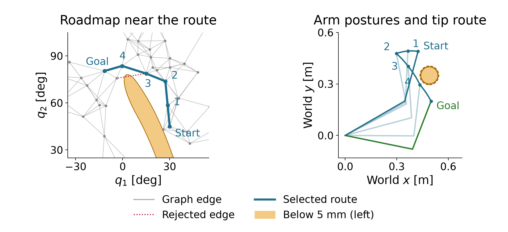
This example draws 400 samples and retains 395 valid configurations. Adding the start and goal gives 397 nodes. Each node selects its five nearest other nodes as connection candidates. Five is a neighbor-selection count, not the final degree of every node: other nodes can also select it. The displayed route has joint-space length 69.89°. The implementation includes the endpoints before building this single-query graph. It does not measure the benefit of reusing a previously built roadmap.
Reuse requires the same scene, robot model, joint limits, clearance requirement and checking rule. Increasing the required margin can invalidate stored edges without moving an obstacle. A failed graph search means that this graph has no route. It does not prove that the continuous planning problem has none.
At each node, store the cheapest route found so far from the start. Call its length the tentative cost D(v), where v is a node label. Also store the preceding node on that route. Initially the start has cost zero and all other nodes have infinite cost.
Suppose the search has reached node u and considers an edge to node v. Let w(u,v) be that edge’s joint-space length. The route through u has cost equal to the cost of reaching u plus the new edge length. Keep it if it improves the current value:
D(v)\leftarrow\min\{D(v),\ D(u)+w(u,v)\}. \tag{3.3}
When the second expression is smaller, record u as the predecessor of v. This update is called edge relaxation. The scalar cost D is distinct from the matrix with the same letter used for optimization weights.
All edge costs are nonnegative. This lets us repeatedly choose the smallest tentative cost and declare it final. The resulting procedure is Dijkstra’s algorithm (Dijkstra, 1959).
Algorithm 3.2. Search a graph with nonnegative edge costs.
The inputs are the checked graph, its edge costs, and the start and goal nodes. The output is a minimum-cost route in this graph, or no route.
To see why settling works, suppose a cheaper route to the chosen node existed. Consider the first unsettled node on that cheaper route. Its predecessor has already been settled. Relaxing their edge must therefore have given this unsettled node a cost no larger than that route’s prefix. The remaining edges cannot reduce the cost because their lengths are nonnegative. This contradicts choosing the smallest tentative cost. Thus a settled cost cannot later improve.
In Figure 3.1, the selected route reaches its last intermediate node with cost 58.2709°. The edge from there to the goal costs 11.6150°. Their sum is
D(\text{goal})\approx58.2709^\circ+11.6150^\circ=69.8859^\circ. \tag{3.4}
Finding this candidate does not yet settle the goal. Other nodes with smaller tentative costs must be considered first. Stop when the goal is selected as the cheapest unsettled node. The result is shortest among the graph’s routes; it need not be shortest among all motions in configuration space.
For a single query, we can grow connections outward from the start. Each new node stores one parent, so every node has a unique route back to the root. This structure is a tree. A rapidly exploring random tree, or RRT, grows toward randomly selected configurations (LaValle).
A sample first identifies the nearest existing tree node under (3.1). The planner then proposes a step from that node toward the sample. Limit its length by the positive parameter d_{\mathrm{step}}. For a nonzero sample-to-node distance, the proposal is
\mathbf q_{\mathrm{new}}=\mathbf q_{\mathrm{near}}+ \min\!\left(1,\frac{d_{\mathrm{step}}} {\|\mathbf q_{\mathrm{rand}}-\mathbf q_{\mathrm{near}}\|_2}\right) (\mathbf q_{\mathrm{rand}}-\mathbf q_{\mathrm{near}}). \tag{3.5}
The difference vector points toward the sample. Dividing by its norm gives a unit direction. Multiplication by the step limit gives the maximum move. The minimum in (3.5) prevents overshooting a closer sample. If the sample already equals the nearest node, no extension is needed.
The sample guides the search; it need not be a valid posture. The proposed node enters the tree only when its connection passes the edge check. Configurations evaluated inside that edge do not become tree nodes.
Algorithm 3.3. Grow an RRT for one start–goal query.
The inputs are checked endpoints, the planning operations, an extension limit, a goal-sampling probability and an attempt budget. The output is a route through accepted edges, or no route found within the budget.
For a numerical extension, suppose the nearest node and sampled target are
\mathbf q_{\mathrm{near}}\approx \begin{bmatrix}53.21^\circ\\9.27^\circ\end{bmatrix},\qquad \mathbf q_{\mathrm{rand}}\approx \begin{bmatrix}94.27^\circ\\-153.17^\circ\end{bmatrix}.
Their Euclidean separation is about 167.56°. A 10° extension therefore uses about 0.05968 of the difference vector and proposes
\mathbf q_{\mathrm{new}}\approx \begin{bmatrix}55.66^\circ\\-0.42^\circ\end{bmatrix}.
The largest coordinate change is about 9.70°. The course checker divides this extension into ten subintervals. It reuses the already checked parent and evaluates ten further postures, including the proposed endpoint. The proposal passes and becomes a child of that parent. The 10° extension limit and the 1° checking resolution serve different purposes. A different extension can need fewer than ten subintervals.
Figure 3.2 shows the completed tree’s selected route. Follow the goal’s parents back to the start, then reverse the order to obtain the motion route. The other branches remain search history. The eight-edge route has length 78.71° and passes the course’s finite edge checks.
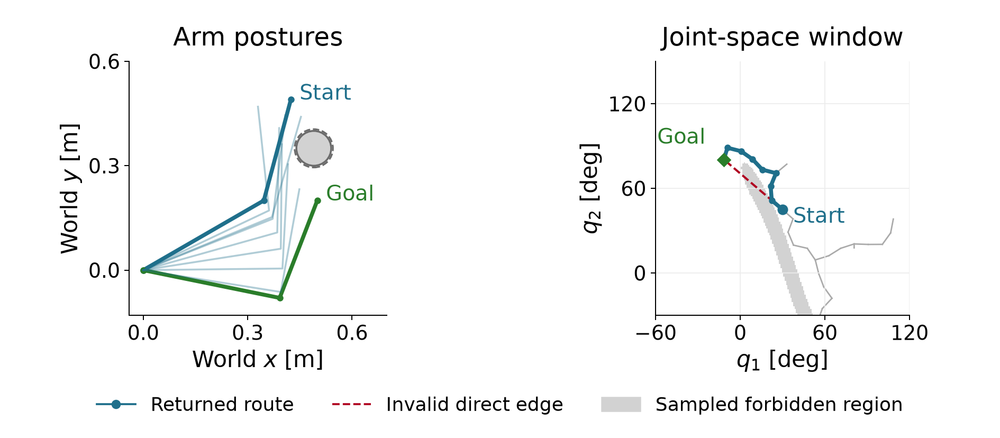
Uniform sampling gives nodes facing larger unsampled regions more chances to be selected as nearest. This encourages exploration. It does not prevent wasted proposals against obstacles or guarantee quick discovery of a narrow passage. Sampling the goal sometimes directs the search toward the query’s endpoint, but a goal-directed edge still needs its geometry check.
A second tree can grow from the goal while the first grows from the start. When a connection joins them, the two parent chains supply a complete route. The goal-rooted chain must be traversed toward its root. Reversing a geometric joint-space edge is valid for this arm model. A system with directional motion constraints would need a suitable connection method.
The following procedure describes the RAI-style bidirectional planner used here. Its extension and joining rules differ from textbook RRT-Connect; Appendix C.1 explains that distinction.
Algorithm 3.4. Grow two trees and check the returned route.
The inputs are the endpoints, geometry, planning parameters and an iteration budget. The output is a returned route together with its independent check result, or no route found within the budget.
RAI’s internal checks use a fixed set of postures and a numerical collision tolerance. They are different from the course’s one-degree check. Also, the segment joining the returned parent chains may differ from the extension just checked during growth. Checking the actual returned route tests the motion that the output specifies.
Figure 3.3 separates the two trees from the selected route. The orange segment joins their parent chains. This example returns a route that passes the course check. That passing finite test still does not certify clearance at every intermediate posture.
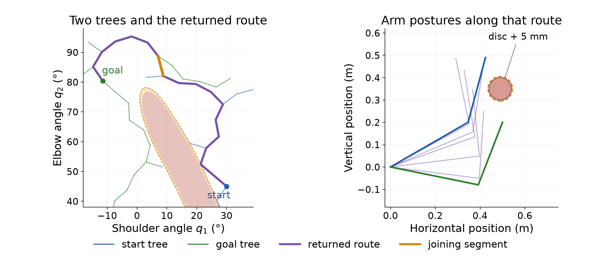
Growing two trees does not by itself establish a speedup. The one-tree and RAI-style examples use different step lengths, internal checks and random streams. Comparing their iteration counts would mix those choices with the search method. A controlled comparison must state the same problem and validation requirements, and measure the work actually performed.
A finite search can end without a route. For example, the one-tree run in Figure 3.2 finds none within twenty attempts but reaches the goal by attempt 42 when allowed to continue. The earlier failure reports a budget outcome; it does not prove that no valid path exists.
For a planner with suitable sampling, connections and sound validity tests, a stronger statement may hold. If a valid route with clearance to spare exists, the probability of finding a valid route approaches one as the number of samples grows. This property is called probabilistic completeness. It gives no finite deadline. The assumptions matter: a theorem about exact validity tests does not certify the course’s finite checks or a particular fixed-five-neighbor roadmap.
Finding a route and minimizing its cost are separate aims. RRT* improves routes by allowing parent changes. For a proposed new node, compare the costs of reaching it through nearby nodes. Choose the cheapest connection that passes the check. Then consider whether a neighboring node can be reached more cheaply through the new node. Replacing that neighbor’s parent is called rewiring. Every adopted connection must pass its check.
A parent’s cost reduction also reduces the costs of its descendants by the same amount, because their remaining edges are unchanged. Figure 3.4 shows one insertion into an existing tree. Rewiring one neighbor saves about 1.63° for that node and its four descendants. The goal is among those descendants, so its route shortens from 78.60° to 76.98°.
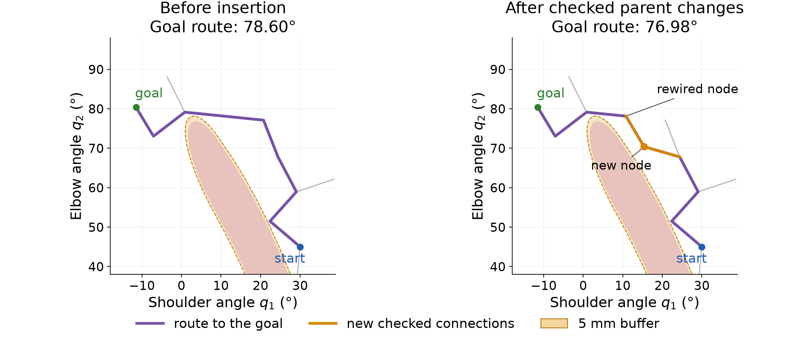
Under the required sampling, neighborhood, cost and validity assumptions, RRT* is asymptotically optimal: its best route cost converges to the optimal value as sampling continues. This does not make the first route optimal. The single insertion above illustrates parent selection and rewiring; it does not demonstrate the limiting result. Karaman and Frazzoli give the algorithms, assumptions and proofs.
The route can also be improved after search has stopped. That separate operation need not retain or modify the search tree.
A planner’s first route can contain unnecessary turns. We can shorten it, then use it to initialize trajectory optimization. Each operation creates new connections. The previous check results apply only to the motion that was checked.
Choose two positions along the current route. They can lie inside edges; they need not be existing vertices. A straight joint-space connection between them may remove an unnecessary turn. Replacing the intervening route in this way is called shortcutting. It can follow PRM, RRT or another planner. It does not require the planner’s search tree.
The direct connection cannot be longer than the removed subpath under the same Euclidean metric. Applying the triangle inequality along that subpath gives
\|\mathbf q_b-\mathbf q_a\|_2 \le \sum_{\text{edges along the removed subpath}} \|\mathbf q_{i+1}-\mathbf q_i\|_2. \tag{4.1}
The first and last terms use the selected positions if they lie inside edges. This inequality concerns length. The direct connection may still cross a forbidden region, so it needs a geometry check.
Algorithm 4.1. Shorten a route with checked shortcuts.
The inputs are a route that passes the connection check, the same checker and an attempt budget. The output is the final accepted route.
The complete candidate check includes the retained portions of old edges. Splitting an edge changes where the finite checker samples it. The new grid can expose a violation missed by the old grid. A passing chord alone therefore does not establish that the complete candidate passes this checker.
Starting from the eight-edge RRT route in Figure 3.2, one hundred attempts accept 37 replacements. The joint-space length falls from 78.71° to 58.34°. The final route has ten edges. Adding the two selected positions can increase the number of vertices while decreasing length. Vertex count is not a measure of travel distance.
The shortened route passes the course’s one-degree check. It still has corners and no execution schedule. A finer scan can also find a clearance violation that the original check missed. Appendix C.2 examines that remaining gap.
Section 2 needs twenty free configurations and the fixed start. To supply that initial guess, place 21 configurations at equal joint-space distances along the shortened route. Equal distance here refers to progress along the polyline, not the distance directly from the start.
Let L_i be the accumulated length from the start to route vertex i. Let L be the total length. The distance assigned to knot t is
\begin{gathered} L_0=0,\qquad L_{i+1}=L_i+d(\mathbf q_i,\mathbf q_{i+1}),\\ \text{distance at knot }t=\frac{tL}{T},\qquad T=20. \end{gathered} \tag{4.2}
Here i indexes the route vertices, while t indexes the new knots. Find the edge containing that target distance, then interpolate within it:
\begin{gathered} L_i\le\frac{tL}{T}\le L_{i+1},\qquad \alpha=\frac{tL/T-L_i}{L_{i+1}-L_i},\\ \mathbf q_t^{\mathrm{init}} =(1-\alpha)\mathbf q_i+\alpha\mathbf q_{i+1}. \end{gathered} \tag{4.3}
Ignore zero-length edges when applying this formula. The scalar \alpha is local progress along the selected edge, as in (1.6). For the 58.34° route, the target distances differ by about 2.92°. This determines an initial configuration at every knot; it does not assign physical execution times.
Figure 4.1 shows why placing knots on the old route does not preserve all of its connections. Two successive knots can lie on opposite sides of a corner. Joining them directly skips that corner and creates a new edge. The close-up shows one such edge entering the 5 mm clearance buffer.
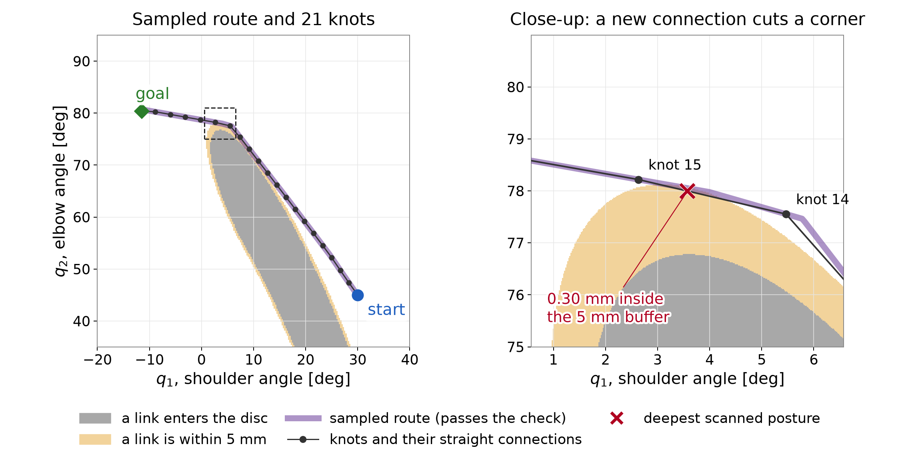
All prepared knots satisfy the clearance rows, but the new connecting motion has a checked deficit of 0.30 mm. This initial guess also fails the final-rest equality. It is input to optimization, not an executable reference. Keeping every old corner would avoid this particular change in geometry, but it would require retaining those vertices when choosing the knot sequence.
Use the prepared sequence as the initial guess for the program in (2.11). The goal, whole-link geometry, 5 mm requirement and acceleration objective are unchanged. We use the accurate reference settings from Section 2 so that a large knot residual does not obscure the between-knot lesson.
Figure 4.2 compares the results from the prepared route and the direct line. The returned knots coincide to numerical accuracy, and both costs are 16.14. The sampled initial guess provides a different route to start from. It does not produce a different optimized answer in this example. Other problems can have different local solutions, so this observation does not remove the need to consider initialization.
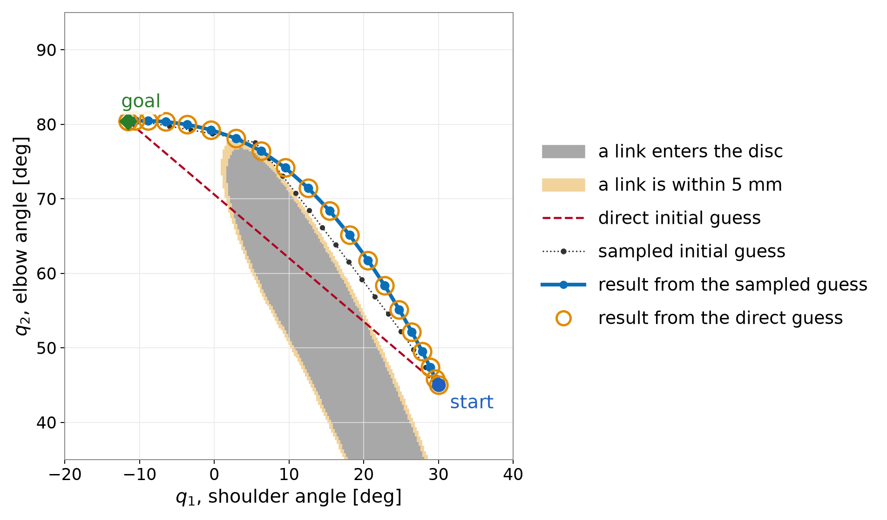
Now compare the prepared sequence with its optimized result. Figure 4.3 shows two separate measurements. The acceleration cost falls from 28.78 to 16.14. The largest between-knot clearance deficit found by the one-degree diagnostic scan grows from 0.30 to 1.84 mm.
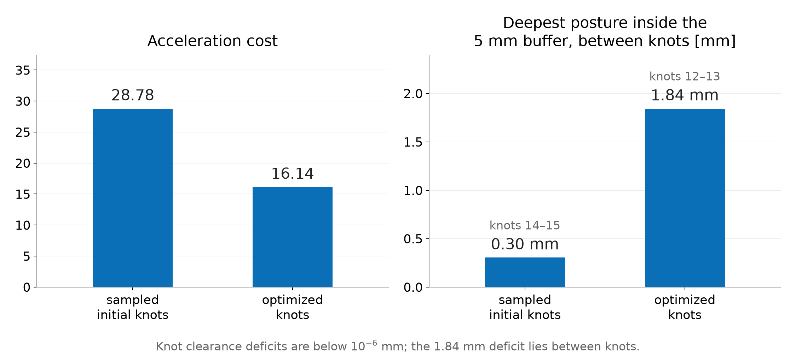
The optimizer constrains clearance at the knots. It does not constrain the interior of their straight connections. Reducing its objective therefore need not improve clearance there. At the halfway posture between knots 12 and 13, link 2 still clears the physical disc by 3.16 mm. It misses the required 5 mm buffer by 1.84 mm. The tiny nonzero residual at a knot remains a separate numerical issue, as explained in §2.6.
More checks can reveal this failure, but they do not change the motion. Repair requires changing the path or the optimization problem. The resulting connections need fresh checks. Adding more knots is one possible change; it does not guarantee a repair. Appendix C.3 gives the forty-interval result.
A finite scan supplies clear evidence when it finds a failing posture. Passing every scheduled posture leaves a different question: how far could a link move between checks? A bound on that movement can supply a sufficient clearance condition.
For this arm, let two adjacent checked postures differ by the joint-angle increments \Delta q_1 and \Delta q_2, in radians. Every material point on either link moves by no more than
b_{\mathrm{move}}=(l_1+l_2)|\Delta q_1|+l_2|\Delta q_2|. \tag{4.4}
This bound has units of meters. Distance to the fixed disc cannot decrease by more than that displacement. Along the straight joint-space connection, any intermediate posture is within half the angular increment of one of the endpoints. Thus it is sufficient that both endpoint clearances satisfy
\min\{d_{\mathrm{clear}}(\mathbf q_a),d_{\mathrm{clear}}(\mathbf q_b)\} \ge d_{\mathrm{req}}+\frac{b_{\mathrm{move}}}{2}. \tag{4.5}
Here the endpoints are consecutive checked postures, which may lie inside a route edge. Appendix C.2 derives the bound. Failure to meet this sufficient condition does not prove a collision; the bound can be conservative.
For the original RRT route, a scan with at most 0.05° per joint between checks gives a smallest clearance of 10.562 mm. At that spacing, half the maximum displacement bound is 0.436 mm. Subtracting it leaves a continuous clearance lower bound of about 10.13 mm, greater than the required 5 mm. This conclusion applies to the original route under the static disc, complete line-segment links and straight joint-space interpolation. It does not apply automatically to the shortcut or optimized routes.
We will use that original RRT route when discussing timing. Its geometric check does not yet establish a suitable speed or acceleration.
Use the original RRT route whose geometric clearance was established in §4.4. The optimized motion still violates the requirement. Assigning times to that violating motion would not remove its geometric failure.
We now return to continuous physical time t, measured in seconds. It is no longer the integer knot index used in the optimization program. Section 1 introduced a dimensionless progress schedule along the route:
\mathbf q(t)=\mathbf q_{\mathrm{path}}(s(t)),\qquad s(0)=0,\qquad s(t_{\mathrm f})=1. \tag{5.1}
The schedule is nondecreasing. Its derivatives determine the joint speeds and accelerations. Where the path and schedule have the required derivatives, the chain rule gives
\dot{\mathbf q}(t)=\mathbf q'_{\mathrm{path}}(s(t))\,\dot s(t). \tag{5.2}
Primes differentiate the path with respect to progress. Dots differentiate with respect to seconds. Differentiate (5.2) using the product rule:
\begin{aligned} \ddot{\mathbf q}(t) &=\frac{d}{dt}\bigl[\mathbf q'_{\mathrm{path}}(s(t))\bigr]\dot s(t) +\mathbf q'_{\mathrm{path}}(s(t))\ddot s(t)\\ &=\mathbf q''_{\mathrm{path}}(s(t))\,\dot s(t)^2 +\mathbf q'_{\mathrm{path}}(s(t))\,\ddot s(t). \end{aligned} \tag{5.3}
The first term accounts for changes in the path’s tangent as the robot progresses. The second accounts for changes in the progress rate. Both have units of rad/s² for this revolute-joint arm. A constant progress rate can therefore produce nonzero joint acceleration along a curved path.
Joint speed and acceleration limits restrict the schedule. To see how duration matters, stretch a fixed smooth trajectory uniformly by a factor a greater than one. If the new trajectory is defined from the old one by
\mathbf q_{\mathrm{slow}}(t)=\mathbf q_{\mathrm{old}}(t/a), \tag{5.4}
its velocity and acceleration at corresponding postures become
\dot{\mathbf q}_{\mathrm{slow}}(t) =\frac1a\dot{\mathbf q}_{\mathrm{old}}(t/a),\qquad \ddot{\mathbf q}_{\mathrm{slow}}(t) =\frac1{a^2}\ddot{\mathbf q}_{\mathrm{old}}(t/a). \tag{5.5}
Doubling the duration halves velocity and quarters acceleration. This statement assumes uniform rescaling of the same smooth motion. Changing the route or interpolation gives a different comparison.
The RRT route is piecewise linear in joint space. At a genuine corner, its direction changes abruptly. Traversing that corner at nonzero speed would require a velocity jump. A bounded-acceleration motion can instead slow to zero at the corner and then leave along the next edge. Another option is to smooth the route. Smoothing changes the geometry, so the new curve needs clearance checks. A larger duration alone does not remove a corner crossed at nonzero speed.
Choosing timing after route search is one workflow. Trajectory optimization can also choose the route and its timing together. The formulation must state which time quantities are fixed and which are decision variables.
KOMO already uses intervals between configurations when evaluating velocity and acceleration features. Our example fixes twenty intervals over one normalized time unit. It does not optimize the physical duration or enforce joint speed and acceleration limits. Interpreting that unit as one second would therefore need additional checks.
RAI also supports time optimization. Drake supports both joint optimization of a path and its duration, and time parameterization of a fixed path. Those capabilities do not change what the program in Section 2 actually contains. Appendix D points to the corresponding interfaces and their documentation.
A demo’s animation speed is separate from these choices. Playback illustrates the geometric motion. It does not establish an execution schedule, enforce actuator limits or add collision checks.
Before execution, specify the interpolation and timing that the interface will follow. A waypoint list alone does not specify them. For example, a spline through the same waypoints can leave the straight segments checked by the planner.
Check clearance along that actual interpolation. Use the relevant robot shapes, obstacle model and self-collision pairs. The planar line-segment example establishes none of the omitted three-dimensional geometry. A changed interpolation or collision model needs a new geometry check.
Then check joint positions, velocities and accelerations under the selected schedule. Changing timing changes the last two while the route can stay the same. Required forces and torques need a dynamics model and actuator limits. A kinematic check alone cannot establish that the robot can supply them. Slowing a motion can reduce inertial demands, but it does not remove gravity loads or a collision with a fixed obstacle.
These checks have different inputs. Clearance depends on geometry and the interpolating path. Motion limits also depend on timing. Actuator demands add physical parameters and loads. State those assumptions when reporting that a reference is ready for execution.
The planned trajectory specifies where the robot should be and when. The physical robot can depart from it because of disturbances, model error or imperfect actuation. A controller receives the reference and measurements of the robot’s state, then computes commands through a stated interface. A position interface, velocity interface and torque interface require different commands and leave different work to the downstream controller.
Measurements close the feedback loop. The controller uses the observed tracking error to adjust its commands. This does not make an invalid reference safe. Tracking deviations can consume the planned clearance, so execution also needs suitable margins and monitoring or replanning. Deriving the dynamics and designing that controller are separate tasks.
This completes the middle stage of the waypoint–reference–controller map in §1.1. The reference includes a route, timing and checks under a stated model. The next topic, learned planning, can change how configurations are proposed or how search is guided. A learned sampler proposes postures; a feasibility predictor estimates which connections are promising; a heuristic ranks search choices. These components can guide computation, but their predictions do not replace the stated motion checks.
The figures are reused from the motion-planning lecture. Its figure generator prints the endpoint, midpoint, sampling and detour calculations before drawing the figures. Run the following shell command from the course repository root in the course Python environment. It prints those calculations without regenerating the images:
.venv/bin/python - <<'PY'
import runpy
opening = runpy.run_path(
"lectures/04-D2-motion-planning/code/make_figures.py")
opening["print_calculations"]()
PYThe sampling reference independently implements the same scene and edge check:
.venv/bin/python modules/motion-planning/rrt_two_link.py --edgeThe printed column already gives clearance from the physical disc surface in millimeters, matching the chapter’s table. Compare those values directly. The edge demonstration shows the same rejection one posture at a time; the figures and equations above contain the reasoning without requiring the demonstration.
Let every matrix block below be 2\times2. The forty acceleration rows are affine in the forty variables:
\begin{gathered} \mathbf r=\mathbf A\mathbf z+\mathbf b,\qquad c_a=\frac{\sqrt{\Delta t}}{\Delta t^2},\\ \mathbf A=c_a \begin{bmatrix} \mathbf I&\mathbf0&\mathbf0&\cdots&\mathbf0\\ -2\mathbf I&\mathbf I&\mathbf0&\cdots&\mathbf0\\ \mathbf I&-2\mathbf I&\mathbf I&\cdots&\mathbf0\\ &\ddots&\ddots&\ddots&\\ \mathbf0&\cdots&\mathbf I&-2\mathbf I&\mathbf I \end{bmatrix},\qquad \mathbf b=c_a \begin{bmatrix}-\mathbf q_0\\\mathbf q_0\\\mathbf0\\\vdots\\\mathbf0\end{bmatrix}. \end{gathered} \tag{B.1}
The first two entries of the offset follow from the repeated start. In the remaining rows all three configurations are free. Consequently the motion cost has exact Hessian 2\mathbf A^\top\mathbf A. A Gauss–Newton matrix for the full augmented residual also contains linearized clearance rows; it is not generally that nonlinear inner objective’s exact Hessian.
Stack the two clearance derivatives at knot t into a matrix \mathbf G_t\in\mathbb R^{2\times2}. The full feature Jacobian, before selecting inequality rows for an inner solve, has 84 rows and 40 columns:
\begin{gathered} \mathbf J= \begin{bmatrix}\mathbf A\\\mathbf J_h\\\mathbf J_g\end{bmatrix},\qquad \mathbf J_h= \begin{bmatrix} \mathbf0&\cdots&\mathbf0&\mathbf I\\ \mathbf0&\cdots&-\mathbf I/\Delta t&\mathbf I/\Delta t \end{bmatrix},\\ \mathbf J_g=\operatorname{diag}(\mathbf G_1,\ldots,\mathbf G_T). \end{gathered} \tag{B.2}
This assembly has forty cost-feature rows, four equality rows and forty inequality rows. The augmented-Lagrangian least-squares representation rescales these blocks and selects its inequality rows, so its working Jacobian need not have all 84 rows.
For either obstacle-free cost, construct the appropriate first- or second-difference matrix in (B.1). Write the endpoint equalities as \mathbf E\mathbf z=\mathbf e, where
\mathbf E=\mathbf J_h,\qquad \mathbf e=(\mathbf q_{\mathrm{goal}}^\top,0,0)^\top.
The quadratic solve in the figure generator uses
\begin{bmatrix} 2\mathbf A^\top\mathbf A&\mathbf E^\top\\ \mathbf E&\mathbf0 \end{bmatrix} \begin{bmatrix}\mathbf z\\\boldsymbol\kappa\end{bmatrix} = \begin{bmatrix}-2\mathbf A^\top\mathbf b\\\mathbf e\end{bmatrix}. \tag{B.3}
The fixed start makes each difference matrix full rank. Its quadratic Hessian is positive definite, so these equality-constrained comparisons have unique minimizers. The script checks both equality residuals and quadratic stationarity, as well as collinearity with the common joint-space route and the step profiles described in the text.
Write the segment direction as \mathbf d=\mathbf p_1-\mathbf p_0. Away from a clipping transition, the total closest-point derivative is
\mathbf J_p=(1-u)\mathbf J_0+u\mathbf J_1 +\mathbf d\,\frac{\partial u}{\partial\mathbf q}. \tag{B.4}
Premultiplication by the distance gradient \mathbf n^\top eliminates the last term at an interior projection because
\mathbf n^\top\mathbf d=0.
On an endpoint branch, the derivative of the clipped fraction is zero. At the branch boundary, the perpendicularity condition also holds, so the positive-distance first derivative matches from both sides. The closest point on a nonzero-length segment is unique. There is no choice between two distinct closest points on that segment. A minimum over different links can have a tie, and the center-to-segment distance can reach zero; these are separate issues from clipping an interior projection to an endpoint.
For explicit planar-arm Jacobians, define the column vector
\mathbf e_\perp(\alpha)= \begin{bmatrix}-\sin\alpha\\\cos\alpha\end{bmatrix}.
Holding u fixed gives the following two columns for each link:
\begin{aligned} \overline{\mathbf J}_{p,1} &=\begin{bmatrix}uL_1\mathbf e_\perp(q_1)&\mathbf0\end{bmatrix},\\ \overline{\mathbf J}_{p,2} &=\begin{bmatrix} L_1\mathbf e_\perp(q_1)+uL_2\mathbf e_\perp(q_1+q_2) &uL_2\mathbf e_\perp(q_1+q_2) \end{bmatrix}. \end{aligned} \tag{B.5}
Here q_1 and q_2 are the shoulder and elbow coordinates of one configuration; they are not knot indices. Substitution into (2.14) gives the two clearance rows. The reproduction check compares these derivatives with centered finite differences at interior projections, clipped endpoints and positive-distance endpoint transitions. It does not evaluate the undefined normal at zero center distance.
From the repository root, using the course Python environment:
chapter=lectures/04-reading-motion-planning
.venv/bin/python "$chapter/code/cost_comparison.py"
.venv/bin/python "$chapter/code/check_section2.py"
.venv/bin/python modules/motion-planning/check_staged.pyThe cost
comparison writes the chapter’s new figure and prints its numerical
checks. The section
check prints derivatives, both solver logs, the margin-sensitivity
check and the independent edge scan. The whole-link
implementation supplies the constrained program. Its NumPy solver
follows the RAI loop in rai_nlp.py.
The native RAI records, including starts, options, returned vectors and
residuals, are in stage4_rai.json.
The supplied direct and detour sequences have initial costs 18.1385 and
28.7777. RAI’s plain call perturbs them before solving.
Figure 2.3 uses the exact supplied direct and detour starts with default options. Figure 2.4 uses the exact direct start with the reference options. The shaded boundaries in Figure 2.3 were traced on a 0.1° joint-angle grid. They illustrate the clearance function; they do not supply its constraint rows.
The following numbers use native seeded calls. The default runs return cost 16.1906. Their returned coordinates agree within 10^{-8} rad. For the native reference, the largest positive clearance row is about 9.7\times10^{-11} m. The goal and final-velocity residuals are below 2\times10^{-11} in the separate units defined in (2.9). The returned angles lie inside the joint box.
For the recorded native reference, the strict course checker first rejects edge 11→12 at knot 12, check 4 of 4 after the edge start. Its deficit is about 9.7\times10^{-11} m. The interior deficits in the §2.6 table come from a complete diagnostic scan of the next edge, 12→13. That scan does not change the checker’s early-stop decision.
| Accurate reference result | Direct initialization | Supplied detour |
|---|---|---|
| Multiplier updates | 9 | 9 |
| Function evaluations | 131 | 131 |
| Acceleration cost | 16.1382 | 16.1382 |
| Largest positive clearance row, m | 9.7\times10^{-11} | 9.7\times10^{-11} |
The solver starts the penalty weight at 1, multiplies it by 5 per
update and caps it at 10000. It uses damping 1, a maximum step of 0.2
rad per coordinate and a Wolfe line search. The reference retains that
schedule, multiplies all constraint rows by ten and changes three
stopping options: stopTolerance=1e-8,
stopFTolerance=1e-12 and stopEvals=5000. These
are numerical settings, not changes to the exact constraints.
The following log records the ends of the inner loops for the direct reference run. Its last column sums positive clearance rows in physical millimeters. It converts RAI’s logged scaled sum by dividing by ten and multiplying by 1000. The final inner solve stops before evaluating a trial point because the largest absolute component of its proposed step is below one tenth of the step tolerance.
| Outer index | Cumulative evaluations | Acceleration cost | Summed knot deficits, mm |
|---|---|---|---|
| 0 | 31 | 8.34498 | 157 |
| 1 | 52 | 11.81720 | 73.1 |
| 2 | 77 | 13.87660 | 25 |
| 3 | 96 | 15.46020 | 5.41 |
| 4 | 107 | 16.12200 | 1.9 |
| 5 | 116 | 16.19440 | 0.144 |
| 6 | 123 | 16.13800 | 0.00252 |
| 7 | 128 | 16.13820 | 6.98\times10^{-6} |
| 8 | 131 | 16.13820 | 9.66\times10^{-8} |
| 9 | 131 | 16.13820 | 9.66\times10^{-8} |
This step-based stop differs from a KKT stopping test. The replay check independently evaluates feasibility, stationarity and complementarity. For the exact-start reference, the Lagrangian-gradient norm is about 3.4\times10^{-6}, compared with an objective-gradient norm of 411.7. The largest absolute multiplier–constraint product is about 1.3\times10^{-8}. Those checks use the physical multipliers, which are ten times the duals for the scaled rows. Equality residuals keep the separate angular units defined in (2.9).
The native RAI program uses capsules of radius 0.0001 m for the links and a sphere of radius 0.0549 m for the obstacle. Their summed radii equal the disc radius plus the 5 mm margin, so RAI’s negative-distance row equals (2.10) for this planar geometry. This representation matches the chapter’s line segments; it does not introduce additional physical link thickness or joint-bound rows.
Using the configured RAI container, run:
RAI_NOVNC=0 scripts/rai_run.sh \
modules/motion-planning/stage4_komo_rai.pyThe RAI runtime guide describes the setup. The script compares feature values and Jacobians on the supplied sequences and a returned reference. Differences are approximately 10^{-14} for values and 6\times10^{-14} for Jacobian entries. It also compares the NumPy port with RAI from the same exact vectors. Most recorded cases replay to rounding precision. Some line-search decisions differ near floating-point ties, so evaluation counts can differ. The replay check reports those cases separately. Capped, nonconverged runs do not have the same agreement guarantee.
The fixture writer records the native seeded calls. This complete
solver call uses the helpers in stage4_komo_rai.py, after
supplying either initial sequence as z0:
C = build()
komo = make_komo(C, constraint_scale=1.0)
komo.initWithPath(z0.reshape(T, 2))
solver = ry.NLP_Solver(komo.nlp(), verbose=0)
ry.rnd_seed(1)
ret = solver.solve()No numerical option is overridden. In this version, the plain call
adds Gaussian initialization noise with standard deviation 0.01 rad. To
use the exact supplied vector instead, call
solver.setInitialization(z0.copy()) before
solve(0). The NumPy port requires an explicit start and
adds no noise.
For the reference, use constraint_scale=10.0 when
constructing KOMO and set these options after constructing the solver
and before seeding:
solver.setOptions(verbose=0, stopTolerance=1e-8,
stopFTolerance=1e-12, stopEvals=5000)The default numerical options include
stopTolerance=0.01, stopFTolerance=0.0001 and
stopEvals=1000. Both default seeded runs return after 28
evaluations with a largest knot deficit of 2.003 mm. Their largest
endpoint-coordinate error is about 4.36\times10^{-5} rad. Both reference seeded
runs take 131 evaluations and meet the knot rows to the accuracy
reported above. The exact-start native reference takes 132.
Scaling every constraint row by ten is an illustrative choice. RAI has no universal feature scale for every task. An earlier seed study with scale ten and untouched stopping options found these outcomes:
| Initial sequence | Initialization noise seed | Evaluations | Largest knot deficit |
|---|---|---|---|
| Direct | 1 | 18 | 0.032 mm |
| Direct | 2–5 | 12 each | About 1.87 mm each |
| Detour | 1 | 12 | 1.869 mm |
Suppressing initialization noise also gave about 1.87 mm from either start. These recorded results show why a favorable single run does not establish reliable accuracy. The reference combines scaling with tighter stops.
RAI’s feasible flag requires two separate sums to be
below 0.1. One sums positive scaled inequality rows; the other sums
absolute scaled equality rows. With unit-scale clearance rows, the first
threshold corresponds to 0.1 m of summed clearance deficit. The equality
sum combines endpoint and rest rows in their specified units. Neither
test is a per-row physical accuracy requirement. A done
flag does not establish such accuracy or clearance between knots.
The earlier study also tested unit-scale rows with the default penalty schedule, the three tight stopping options and exact initialization. Both runs exhausted 5000 evaluations with knot deficits of 2.2 and 2.7 mm. The largest absolute equality rows were 7.7\times10^{-4} and 2.8\times10^{-4} in their respective units. These were not untouched-default runs. Their cycling behavior has no established explanation here. The study’s fixed-weight comparison used a penalty of 160000 and returned after 59 and 52 evaluations with accurate knots. That configuration is retained only as a historical comparison; the current examples use RAI’s penalty schedule. The archived run records preserve the earlier fixed-weight experiment, and the seed-study record preserves the scale-ten seed comparison.
All compared sequences fail the course edge check. The script’s
--report option saves its options, returned vectors and
residual checks to a JSON file.
The following settings describe the RAI-style procedure used for Figure 3.3. They are implementation choices, not the definition of bidirectional RRT. The supplied Python reference implements them on this arm’s geometry.
| Choice | Setting in this example |
|---|---|
| Target selection | Choose a random node of the other tree with probability 0.5; otherwise sample the joint box uniformly. |
| Extension length | Move at most 0.1 rad in Euclidean joint-space distance. |
| Internal edge queries | Check the proposed endpoint, then fractions 1/2, 1/4 and 3/4 along the extension. Stop at a failed query. |
| Collision tolerance | Pass when the sum of positive link-clearance deficits is below 0.1 mm, relative to the 5 mm requirement. |
| Joining threshold | Join when the proposed node is less than 0.025 rad from the nearest node of the other tree. |
One iteration gives the start tree an attempt, then gives the goal tree an attempt only if the first did not join them. These counts differ from the single-extension iterations in the one-tree example.
The returned joining segment connects the new node’s parent directly to the other tree’s nearest node. The new node itself is omitted from the vertex list. This gives three cases:
The actual output therefore needs an independent path check. For the page’s seed 7, the joining attempt tests only part of that segment, but the returned route passes the course’s one-degree check. The page’s seed 1327 supplies a counterexample: the first failed posture on the joining segment has clearance 4.423 mm. It misses the margin while remaining outside the physical disc.
The page and its Python reference use their own seeded random generator. A seed number does not identify the same random sequence in native RAI. The reference also has a native-stream replay mode. Its supplied native records establish agreement for recorded runs, not a mathematical guarantee about every run or every version. The module notes record the inspected implementation and replay evidence.
Textbook RRT-Connect repeatedly extends the other
tree toward a newly added node until it reaches the target or becomes
blocked. It then exchanges the trees’ roles if they have not connected.
This repeated extension is absent from the RAI-style procedure above.
See Kuffner and
LaValle for the original method. The supplied
rrt_connect function in staged_two_link.py
implements that separate comparison. Its results do not describe Figure
3.3.
The displacement bound in (4.4) compares the same material point at two configurations. It does not follow the closest point, which can slide along the link. Let u_{\mathrm{link}} be a fixed fraction from zero to one along link 2. The point’s world position is
\mathbf p(\mathbf q,u_{\mathrm{link}}) =l_1\begin{bmatrix}\cos q_1\\\sin q_1\end{bmatrix} +u_{\mathrm{link}}l_2 \begin{bmatrix}\cos(q_1+q_2)\\\sin(q_1+q_2)\end{bmatrix}. \tag{C.1}
A unit vector rotated by angle \theta moves through a chord of length
2|\sin(\theta/2)|\le|\theta|. \tag{C.2}
The inequality uses radians. Apply it separately to the two terms in (C.1), then use the triangle inequality:
\begin{gathered} \|\mathbf p(\mathbf q+\Delta\mathbf q,u_{\mathrm{link}}) -\mathbf p(\mathbf q,u_{\mathrm{link}})\|\\ \le l_1|\Delta q_1| +u_{\mathrm{link}}l_2|\Delta q_1+\Delta q_2|\\ \le (l_1+l_2)|\Delta q_1|+l_2|\Delta q_2|. \end{gathered} \tag{C.3}
The last line uses the upper bound of one on the fraction and the triangle inequality for the sum of angles. Link 1 has no second-link contribution, so the same upper bound covers all points of both links.
Distance from a material point to the fixed disc can decrease by no more than that point moves. The displacement bound holds for every material point, so it also bounds the decrease in minimum whole-link clearance. Along a joint-linear subinterval, every posture is within half its coordinate increments of one of the two endpoints. Requiring sufficient clearance at both endpoints therefore gives (4.5).
At the maximum one-degree coordinate increments, the bound is
b_{\mathrm{move}} =0.7\frac{\pi}{180}+0.3\frac{\pi}{180} \approx17.45\ \mathrm{mm}. \tag{C.4}
The sufficient surplus at each checked endpoint is half of this, about 8.73 mm above the required 5 mm. A passing check with clearance only slightly above 5 mm does not meet that condition. It may still be clear; this particular bound cannot establish it.
For the current roadmap and original RRT route, the scans give positive certificates under the stated geometric model:
| Route | Maximum check spacing per joint | Smallest checked clearance | Half-bound | Continuous clearance lower bound |
|---|---|---|---|---|
| Five-edge PRM route | 1° | 23.577 mm | 8.727 mm | 14.85 mm |
| Original RRT route | 0.05° | 10.562 mm | 0.436 mm | 10.13 mm |
Both endpoints of every subinterval are included. These lower bounds exceed 5 mm. A different robot shape, moving obstacle or interpolating curve requires a bound for that model. Tracking error is not included here.
The shortcut route gives a contrasting result. Its one-degree scan passes, with a smallest checked clearance of 5.086 mm. A 0.05° diagnostic scan finds 4.912 mm, about 0.09 mm short of the requirement. Figure C.1 shows the shorter route and the close approach to the disc. The physical disc is not touched.
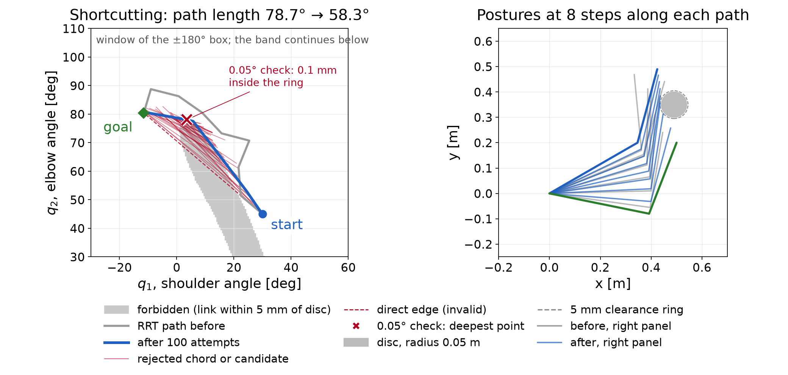
Reducing a fixed checking interval provides more samples, not a proof by itself. An adaptive procedure can use the bound to certify a subinterval, subdivide it when the bound is inconclusive, or reject it when a checked posture fails. A near-boundary path may require further refinement without obtaining a certificate.
Halving the normalized interval gives forty free configurations and twice as many clearance rows. Using the direct initial guess and accurate reference settings gives the following comparison:
| Number of intervals | Acceleration cost | Largest scanned interior clearance deficit |
|---|---|---|
| 20 | 16.14 | 1.84 mm |
| 40 | 16.39 | 0.43 mm |
Both sets of knot constraints are satisfied to numerical accuracy. The forty-interval result has a smaller interior deficit, but it still fails the clearance requirement. The discretization and its difference features have also changed, so these two costs should not be read as an improvement on one fixed finite program. Increasing the knot count requires solving and checking the new motion.
The following command recomputes the chapter’s examples and prints a JSON record. It writes no figures or native fixtures:
.venv/bin/python lectures/04-reading-motion-planning/code/check_continuation.pyThe chapter check uses the following supplied functions. It also checks the graph optimum with a separate edge-relaxation calculation, includes both endpoints in its clearance scans and verifies the timing derivatives by finite differences.
| Topic | Supplied function |
|---|---|
| Roadmap and Dijkstra | prm in staged_two_link.py,
with 400 samples and five neighbors |
| One-tree RRT | rrt in rrt_two_link.py, seed
7 |
| Bidirectional RRT | plan and check_path in rai_bidir_rrt.py,
page seeds 7 and 1327 |
| RRT* insertion | run in rrtstar_reference.py,
seed 17, sample 141, radius 10° |
| Shortcut and knot preparation | shortcut and resample in staged_two_link.py,
seed 7 and 100 attempts |
| Refinement figures and reference checks | compute and check_against_native in refine_figures.py |
The RRT* illustration inserts only the selected sample into an existing RRT tree. Earlier draws used to select that example are not inserted. It is not a simulation of 141 RRT* growth steps.
The refinement figures use exact supplied initial vectors. The
program and solver options are those of Appendix B’s accurate reference.
Native RAI records for these exact starts are in refine_rai.json.
The forty-interval comparison uses case
W-auglag-tight-line-s10-T40-seed1 in stage4_rai.json.
That record uses the native seeded initialization; the exact-start port
agrees at the precision shown in the table. Evaluation counts and the
first digit of tiny residuals can vary with floating-point line-search
decisions.
The interactive sampling views show tree growth, parent changes and shortcut attempts. The optimization explorer has the Motion refinement tab for knot placement, solution comparison and motion checking. They illustrate the same examples used by the static figures. Their classroom button sequences belong to the speaker guide.
For further reading, Geraerts and Overmars study path length and clearance as distinct quality criteria. Their partial shortcut method changes individual degrees of freedom. The simple method here replaces a subpath with a straight connection in the full joint vector.
The interfaces below locate the timing choices described in §5.2. They do not supply an execution certificate for the chapter’s paths.
RAI’s KOMO
API includes addTimeOptimization. The chapter’s worked
program fixes its normalized duration and does not enable that option.
Adding a time decision also requires objectives and constraints that
express the intended task.
RAI’s BotOp interface follows a timed spline reference. Its official
tutorial uses move(path, [4.]) to request a four-second
motion. The moveAutoTimed
helper chooses equal time spacing using supplied maximum velocity
and acceleration values. The resulting spline must still be checked
against the collision model. It can differ from the joint-linear path
used by the planner.
Drake’s KinematicTrajectoryOptimization
uses a normalized B-spline path and a separate duration variable. It can
optimize both under the supplied costs and constraints. Drake’s Toppra
instead computes timing for a fixed path using specified limits. Those
can include joint velocity, acceleration and torque limits. These are
different formulations; neither follows merely from playing a list of
configurations.